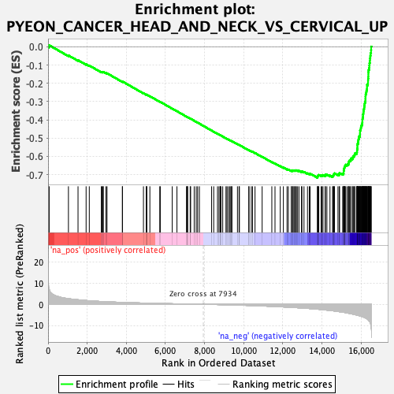
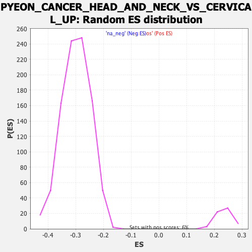

| | | Dataset | DE_genes2 |
| Phenotype | NoPhenotypeAvailable |
| Upregulated in class | na_neg |
| GeneSet | PYEON_CANCER_HEAD_AND_NECK_VS_CERVICAL_UP |
| Enrichment Score (ES) | -0.71736556 |
| Normalized Enrichment Score (NES) | -2.3974519 |
| Nominal p-value | 0.0 |
| FDR q-value | 0.0 |
| FWER p-Value | 0.0 |
Table: GSEA Results Summary

Fig 1: Enrichment plot: PYEON_CANCER_HEAD_AND_NECK_VS_CERVICAL_UP
Profile of the Running ES Score & Positions of GeneSet Members on the Rank Ordered List
| PROBE | GENE SYMBOL | GENE_TITLE | RANK IN GENE LIST | RANK METRIC SCORE | RUNNING ES | CORE ENRICHMENT | | 1 | ANKLE2 | | | 57 | 7.212 | 0.0086 | No |
| 2 | NDUFB4 | | | 1041 | 2.687 | -0.0470 | No |
| 3 | CALML4 | | | 1531 | 2.152 | -0.0733 | No |
| 4 | BHLHE40 | | | 1944 | 1.796 | -0.0954 | No |
| 5 | GCH1 | | | 2107 | 1.677 | -0.1025 | No |
| 6 | STS | | | 2722 | 1.321 | -0.1379 | No |
| 7 | ELF3 | | | 2754 | 1.306 | -0.1376 | No |
| 8 | CDKN2A | | | 2805 | 1.282 | -0.1385 | No |
| 9 | LINC00342 | | | 2823 | 1.276 | -0.1374 | No |
| 10 | SIK1 | | | 2959 | 1.213 | -0.1436 | No |
| 11 | KDM6A | | | 3014 | 1.190 | -0.1449 | No |
| 12 | CDKN2B | | | 3797 | 0.895 | -0.1912 | No |
| 13 | NR4A2 | | | 3803 | 0.894 | -0.1900 | No |
| 14 | EYA2 | | | 4875 | 0.600 | -0.2545 | No |
| 15 | KRT19 | | | 5017 | 0.566 | -0.2622 | No |
| 16 | ESR1 | | | 5037 | 0.561 | -0.2624 | No |
| 17 | BCL2L11 | | | 5044 | 0.560 | -0.2618 | No |
| 18 | ZNF532 | | | 5203 | 0.518 | -0.2706 | No |
| 19 | RASEF | | | 5709 | 0.402 | -0.3008 | No |
| 20 | B4GALT4 | | | 5735 | 0.397 | -0.3017 | No |
| 21 | ATP8B1 | | | 6346 | 0.276 | -0.3385 | No |
| 22 | FNBP1L | | | 6587 | 0.225 | -0.3528 | No |
| 23 | JPX | | | 7076 | 0.139 | -0.3824 | No |
| 24 | TMEM30B | | | 7100 | 0.135 | -0.3836 | No |
| 25 | MECOM | | | 7120 | 0.130 | -0.3845 | No |
| 26 | GRAMD1C | | | 7131 | 0.128 | -0.3849 | No |
| 27 | PXYLP1 | | | 7263 | 0.104 | -0.3928 | No |
| 28 | OCLN | | | 7287 | 0.099 | -0.3940 | No |
| 29 | PRMT6 | | | 7468 | 0.071 | -0.4049 | No |
| 30 | CCHCR1 | | | 7570 | 0.053 | -0.4110 | No |
| 31 | DIP2A | | | 7643 | 0.041 | -0.4153 | No |
| 32 | HOXB3 | | | 7734 | 0.027 | -0.4208 | No |
| 33 | FAM50A | | | 8358 | -0.068 | -0.4588 | No |
| 34 | ANAPC5 | | | 8465 | -0.087 | -0.4651 | No |
| 35 | TUG1 | | | 8660 | -0.122 | -0.4768 | No |
| 36 | SUDS3 | | | 8736 | -0.139 | -0.4811 | No |
| 37 | PER3 | | | 8796 | -0.151 | -0.4845 | No |
| 38 | REL | | | 8803 | -0.152 | -0.4846 | No |
| 39 | GOLGA8A | | | 8837 | -0.158 | -0.4863 | No |
| 40 | SPICE1 | | | 8926 | -0.177 | -0.4914 | No |
| 41 | ODF2L | | | 9092 | -0.213 | -0.5011 | No |
| 42 | MEIS1 | | | 9141 | -0.223 | -0.5037 | No |
| 43 | CXADR | | | 9210 | -0.243 | -0.5075 | No |
| 44 | PRDM15 | | | 9284 | -0.263 | -0.5115 | No |
| 45 | ERMP1 | | | 9339 | -0.274 | -0.5143 | No |
| 46 | SS18L1 | | | 9378 | -0.284 | -0.5162 | No |
| 47 | ABCA5 | | | 9396 | -0.288 | -0.5167 | No |
| 48 | NUP210 | | | 9679 | -0.363 | -0.5334 | No |
| 49 | PLSCR4 | | | 9761 | -0.389 | -0.5377 | No |
| 50 | SYCP2 | | | 9779 | -0.393 | -0.5380 | No |
| 51 | ANKRD36B | | | 10259 | -0.541 | -0.5664 | No |
| 52 | PRKX | | | 10270 | -0.544 | -0.5661 | No |
| 53 | SYNJ1 | | | 10387 | -0.584 | -0.5722 | No |
| 54 | CASK | | | 10449 | -0.602 | -0.5749 | No |
| 55 | REV1 | | | 10577 | -0.653 | -0.5816 | No |
| 56 | ZBTB8A | | | 10941 | -0.779 | -0.6025 | No |
| 57 | PMAIP1 | | | 11436 | -0.983 | -0.6311 | No |
| 58 | HOXD10 | | | 11598 | -1.045 | -0.6392 | No |
| 59 | MYO5C | | | 11867 | -1.160 | -0.6536 | No |
| 60 | GSPT1 | | | 12026 | -1.234 | -0.6612 | No |
| 61 | SKIL | | | 12213 | -1.332 | -0.6703 | No |
| 62 | MCPH1 | | | 12281 | -1.366 | -0.6721 | No |
| 63 | BRWD1 | | | 12432 | -1.441 | -0.6789 | No |
| 64 | UBXN7 | | | 12438 | -1.444 | -0.6768 | No |
| 65 | ETS2 | | | 12507 | -1.476 | -0.6784 | No |
| 66 | ZRSR2 | | | 12519 | -1.485 | -0.6766 | No |
| 67 | ZNF236 | | | 12573 | -1.521 | -0.6773 | No |
| 68 | HOXA10 | | | 12607 | -1.536 | -0.6767 | No |
| 69 | XK | | | 12659 | -1.570 | -0.6772 | No |
| 70 | E2F8 | | | 12689 | -1.584 | -0.6763 | No |
| 71 | THAP9-AS1 | | | 12753 | -1.618 | -0.6775 | No |
| 72 | HACE1 | | | 12823 | -1.668 | -0.6789 | No |
| 73 | SLC35A3 | | | 12951 | -1.743 | -0.6837 | No |
| 74 | POLD3 | | | 12975 | -1.753 | -0.6822 | No |
| 75 | RBBP4 | | | 13080 | -1.817 | -0.6855 | No |
| 76 | DDX59 | | | 13259 | -1.930 | -0.6932 | No |
| 77 | HMGB3 | | | 13350 | -1.994 | -0.6953 | No |
| 78 | DR1 | | | 13391 | -2.021 | -0.6944 | No |
| 79 | E2F7 | | | 13768 | -2.300 | -0.7135 | Yes |
| 80 | INTS7 | | | 13780 | -2.313 | -0.7103 | Yes |
| 81 | MCM3 | | | 13783 | -2.315 | -0.7065 | Yes |
| 82 | TXNDC16 | | | 13812 | -2.337 | -0.7043 | Yes |
| 83 | BAG5 | | | 13837 | -2.362 | -0.7018 | Yes |
| 84 | RFC5 | | | 13956 | -2.460 | -0.7049 | Yes |
| 85 | USP25 | | | 14002 | -2.495 | -0.7035 | Yes |
| 86 | NEK2 | | | 14051 | -2.552 | -0.7021 | Yes |
| 87 | CCNL1 | | | 14167 | -2.658 | -0.7047 | Yes |
| 88 | GART | | | 14168 | -2.658 | -0.7002 | Yes |
| 89 | PIGA | | | 14250 | -2.741 | -0.7006 | Yes |
| 90 | HSPA1A | | | 14408 | -2.884 | -0.7054 | Yes |
| 91 | CENPU | | | 14542 | -3.039 | -0.7084 | Yes |
| 92 | MTF2 | | | 14572 | -3.073 | -0.7050 | Yes |
| 93 | OSBPL11 | | | 14589 | -3.099 | -0.7008 | Yes |
| 94 | NUP62CL | | | 14613 | -3.127 | -0.6969 | Yes |
| 95 | ZNF678 | | | 14639 | -3.174 | -0.6931 | Yes |
| 96 | PPM1A | | | 14816 | -3.381 | -0.6982 | Yes |
| 97 | PDIK1L | | | 14889 | -3.488 | -0.6968 | Yes |
| 98 | KLHL2 | | | 14894 | -3.500 | -0.6911 | Yes |
| 99 | HNRNPU | | | 15058 | -3.735 | -0.6948 | Yes |
| 100 | DONSON | | | 15105 | -3.791 | -0.6913 | Yes |
| 101 | ZBTB21 | | | 15106 | -3.796 | -0.6849 | Yes |
| 102 | MIS18A | | | 15108 | -3.798 | -0.6786 | Yes |
| 103 | CENPI | | | 15122 | -3.810 | -0.6730 | Yes |
| 104 | DDX3X | | | 15126 | -3.818 | -0.6668 | Yes |
| 105 | MSL2 | | | 15144 | -3.836 | -0.6614 | Yes |
| 106 | ENOSF1 | | | 15160 | -3.864 | -0.6558 | Yes |
| 107 | SF3B1 | | | 15180 | -3.893 | -0.6504 | Yes |
| 108 | POLA1 | | | 15213 | -3.936 | -0.6458 | Yes |
| 109 | ARHGAP5 | | | 15292 | -4.102 | -0.6437 | Yes |
| 110 | EZH2 | | | 15352 | -4.214 | -0.6402 | Yes |
| 111 | BARD1 | | | 15360 | -4.219 | -0.6336 | Yes |
| 112 | NEK4 | | | 15377 | -4.254 | -0.6274 | Yes |
| 113 | ATAD2B | | | 15409 | -4.315 | -0.6221 | Yes |
| 114 | HNRNPA1 | | | 15470 | -4.432 | -0.6183 | Yes |
| 115 | GEN1 | | | 15480 | -4.447 | -0.6114 | Yes |
| 116 | GINS1 | | | 15564 | -4.619 | -0.6087 | Yes |
| 117 | ZFX | | | 15584 | -4.668 | -0.6020 | Yes |
| 118 | NR1D2 | | | 15617 | -4.753 | -0.5960 | Yes |
| 119 | KNTC1 | | | 15665 | -4.846 | -0.5907 | Yes |
| 120 | UHRF1 | | | 15683 | -4.875 | -0.5836 | Yes |
| 121 | PRPS2 | | | 15766 | -5.039 | -0.5802 | Yes |
| 122 | CREBZF | | | 15788 | -5.095 | -0.5729 | Yes |
| 123 | NASP | | | 15792 | -5.106 | -0.5645 | Yes |
| 124 | C18orf54 | | | 15803 | -5.136 | -0.5565 | Yes |
| 125 | RIMKLB | | | 15809 | -5.155 | -0.5482 | Yes |
| 126 | CDK1 | | | 15810 | -5.156 | -0.5395 | Yes |
| 127 | CASP8AP2 | | | 15814 | -5.170 | -0.5310 | Yes |
| 128 | CENPJ | | | 15846 | -5.253 | -0.5241 | Yes |
| 129 | FANCL | | | 15854 | -5.274 | -0.5157 | Yes |
| 130 | CDC42BPA | | | 15862 | -5.300 | -0.5072 | Yes |
| 131 | TOPBP1 | | | 15880 | -5.334 | -0.4993 | Yes |
| 132 | FAM199X | | | 15891 | -5.375 | -0.4909 | Yes |
| 133 | HELLS | | | 15936 | -5.474 | -0.4844 | Yes |
| 134 | CEP152 | | | 15941 | -5.489 | -0.4754 | Yes |
| 135 | FMR1 | | | 15943 | -5.491 | -0.4663 | Yes |
| 136 | AHCTF1 | | | 15945 | -5.493 | -0.4571 | Yes |
| 137 | HLTF | | | 15978 | -5.593 | -0.4497 | Yes |
| 138 | PRPF39 | | | 15989 | -5.638 | -0.4408 | Yes |
| 139 | PARD6B | | | 16005 | -5.683 | -0.4322 | Yes |
| 140 | FGFR1OP2 | | | 16038 | -5.796 | -0.4244 | Yes |
| 141 | ZGRF1 | | | 16060 | -5.847 | -0.4159 | Yes |
| 142 | ATAD2 | | | 16065 | -5.853 | -0.4063 | Yes |
| 143 | TMPO | | | 16067 | -5.864 | -0.3965 | Yes |
| 144 | OPA1 | | | 16077 | -5.892 | -0.3872 | Yes |
| 145 | SCML1 | | | 16097 | -5.951 | -0.3784 | Yes |
| 146 | C2CD5 | | | 16099 | -5.958 | -0.3684 | Yes |
| 147 | CCNE2 | | | 16115 | -5.986 | -0.3593 | Yes |
| 148 | CDC7 | | | 16121 | -6.016 | -0.3495 | Yes |
| 149 | UPF3B | | | 16137 | -6.071 | -0.3402 | Yes |
| 150 | PAXBP1 | | | 16156 | -6.141 | -0.3310 | Yes |
| 151 | CCDC14 | | | 16164 | -6.185 | -0.3211 | Yes |
| 152 | LMNB1 | | | 16178 | -6.259 | -0.3114 | Yes |
| 153 | RBL1 | | | 16193 | -6.303 | -0.3017 | Yes |
| 154 | USP37 | | | 16219 | -6.429 | -0.2924 | Yes |
| 155 | RAD51AP1 | | | 16221 | -6.439 | -0.2817 | Yes |
| 156 | ARL13B | | | 16224 | -6.452 | -0.2709 | Yes |
| 157 | DTL | | | 16230 | -6.481 | -0.2604 | Yes |
| 158 | WDR76 | | | 16253 | -6.571 | -0.2507 | Yes |
| 159 | CEP44 | | | 16269 | -6.674 | -0.2404 | Yes |
| 160 | CCDC18 | | | 16295 | -6.847 | -0.2304 | Yes |
| 161 | CCDC150 | | | 16301 | -6.866 | -0.2192 | Yes |
| 162 | ANKRD13C | | | 16303 | -6.872 | -0.2078 | Yes |
| 163 | PSIP1 | | | 16348 | -7.206 | -0.1984 | Yes |
| 164 | CHML | | | 16352 | -7.234 | -0.1864 | Yes |
| 165 | KCTD3 | | | 16356 | -7.244 | -0.1744 | Yes |
| 166 | ZNF367 | | | 16367 | -7.350 | -0.1627 | Yes |
| 167 | BRIP1 | | | 16369 | -7.368 | -0.1504 | Yes |
| 168 | U2SURP | | | 16370 | -7.372 | -0.1380 | Yes |
| 169 | NUF2 | | | 16382 | -7.475 | -0.1261 | Yes |
| 170 | RMI1 | | | 16408 | -7.835 | -0.1145 | Yes |
| 171 | SMC4 | | | 16421 | -7.981 | -0.1019 | Yes |
| 172 | STAG1 | | | 16427 | -8.038 | -0.0887 | Yes |
| 173 | GAS2L3 | | | 16446 | -8.221 | -0.0760 | Yes |
| 174 | KIF15 | | | 16449 | -8.254 | -0.0623 | Yes |
| 175 | WDHD1 | | | 16469 | -8.658 | -0.0489 | Yes |
| 176 | CENPK | | | 16485 | -9.298 | -0.0342 | Yes |
| 177 | CENPF | | | 16507 | -10.688 | -0.0175 | Yes |
| 178 | CDCA7 | | | 16514 | -11.289 | 0.0010 | Yes |
Table: GSEA details [plain text format]

Fig 2: PYEON_CANCER_HEAD_AND_NECK_VS_CERVICAL_UP: Random ES distribution
Gene set null distribution of ES for PYEON_CANCER_HEAD_AND_NECK_VS_CERVICAL_UP